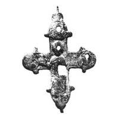
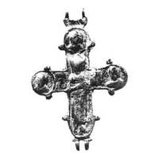

Catalog › CE-0882 · KOR2003-II.3.1.5
Encolpion întreg cu urme de țesătură pe interiorul valvei de revers, reliefuri standard semiuzate
sec. XII (1101–1200) · Cetatea Șepetivka, raionul Șepetivka, regiunea Hmelnîțkîi, Ucraina · Muzeul de Stat Ermitaj, Sankt-Petersburg, Secția de istorie a culturii ruse (OIRK), inv. ГД 58/7985а, б
double-sided reliquary cross (enkolpion), aramă; c. XII (1101–1200); found at Cetatea Șepetivka, raionul Șepetivka, regiunea Hmelnîțkîi, Ucraina; kept at Muzeul de Stat Ermitaj, Sankt-Petersburg, Secția de istorie a culturii ruse (OIRK).




Identificare
- Categorie
- Encolpion bivalv (relicvar)
- Material
- Aramă
- Tehnică
- Turnare în relief; Gravare (incizie)
- Stare
- Întreagă
- Dimensiuni
- Î 60 × L 50 mm
Iconografie
- Avers
- Sf. Boris și Gleb
- Descriere avers
- Pe valva de față suprafață poroasă, zgurificată; pe cele mai înalte locuri ale reliefurilor (în medalioanele de sus și din dreapta și în trei locuri pe imaginea centrală a prințului) uzură până la găuri.
- Revers
- Sf. Boris și Gleb
- Descriere revers
- Reliefuri mai clare, bordurile și chiar ornament geometric tăiat pe baza perechii de balamale de sus. Inscripție adâncită, neclară, la stânga figurii prințului: ГӨ [?].
- Inscripții
- ГӨ [?]
- Limba
- Slavonă
Datare și atribuire
- Datare
- sec. XII (1101–1200)
- Centru
- Necunoscut
- Tipologie
- Korzukhina–Peskova 2003, tip II 3 1
Descoperire
- Localitate
- Cetatea Șepetivka
- Regiune
- raionul Șepetivka, regiunea Hmelnîțkîi
- Țară
- Ucraina
- Context
- Fortificație
- Anul
- 1958
Păstrare și referințe
- Colecție
- Muzeul de Stat Ermitaj, Sankt-Petersburg, Secția de istorie a culturii ruse (OIRK)
- Nr. inventar
- ГД 58/7985а, б
- Bibliografie
- G. F. Korzukhina, A. A. Peskova, Древнерусские энколпионы. Нагрудные кресты-реликварии XI–XIII вв., Sankt-Petersburg, 2003 [Korzukhina–Peskova 2003], p. 88, cat. nr. II 3 1/5, reprodusă la Табл. 39 (planșe, p. 281).
- Figura
- Табл. 39
- Planșe
- Korzukhina–Peskova 2003, Табл. 39 (planșă fără paginație proprie în PDF; p. 281 tipărită)
- Observații
- Datare după Peskova: sec. XII. Circumstanțe: Săpături M. K. Karger în fortificația cetății, 1958. Cu resturi de țesătură pe suprafața interioară a valvei de revers. Foto: IIMK RAN. Coordonate: nu sunt date în sursă.
Citare: Corpus Encolpiorum, CE-0882, Encolpion întreg cu urme de țesătură pe interiorul valvei de revers, reliefuri standard semiuzate, --root/piese/KOR2003-II.3.1.5/ (accesat 2026-10-20).